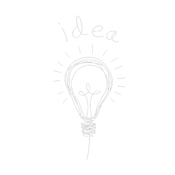

home > 제품개발 > 과제 및 전략
과제 및 전략
글로벌 마켓 진출을 중장기 전략목표로 연구활동을 합니다.
연구과제
| 구분 | 진행사항 | |
|---|---|---|
| OTC | OTC 신약 | 후보물질 도출 |
| 브랜드 제품 연구 | 연구단계 | |
| 신제품 연구 | 연구완료 | |
| Healthcare | 브랜드 제품 연구 | 임상연구단계 |
| 신제품 연구 | 후보물질 도출 | |
| 건기식 | 개별인정형 제품 | 기능성 개별인정 완료 |
| 인체적응시험 단계 | ||
향후전략

미래성장 가능성이 높은 잠재적 시장 발굴을 통해 중점연구분야를 선정하고, 중장기전략을 수립하여 단편적인 제품중심의 연구에서 벗어나 대형 프로젝트 중심의 연구비중을 높여나갈 계획입니다.
제제연구, 효력 및 임상평가기술 등의 내부역량을 강화하여 효능형 대형제품연구를 위한 연구체제를 구축하고, 독점화가 가능한 고기능성 신소재나 새로운 아이디어 발굴, 효력 및 임상평가등에서 외부 연구기관과의 활발한 네트워킹을 통해 연구의 효율성을 제고한다는 전략입니다.
브랜드제품과 신제품을 국내시장에 발매하여 지속적 성장을 이끌고, 국제규격에 부합하는 허가자료와 임상자료 확보를 통한 글로벌 마켓 진출을 중장기 전략목표로 하고 있습니다